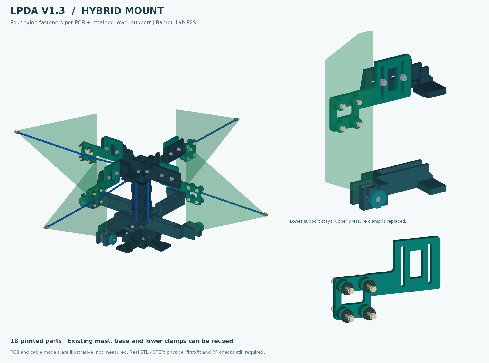
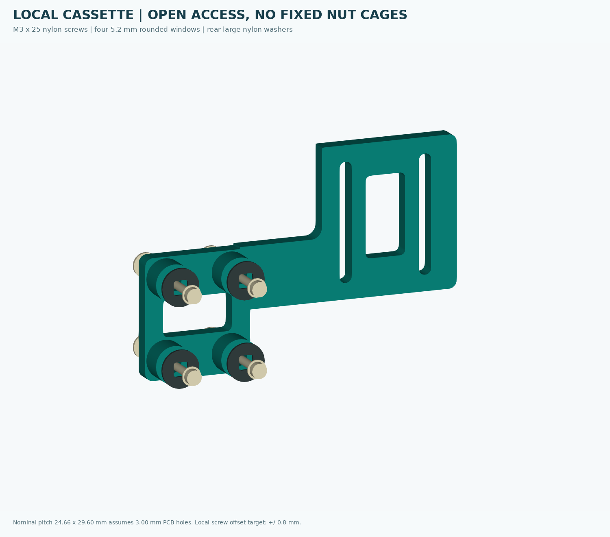

SPECTRUM_SENSING / LPDA MOUNT V1.3 HYBRID / 2026-09-12
V1.3 混合固定：保留下托，四孔带余量
18 个 PETG 打印件。V1.2.1 已有合格件可复用，只新增 2 个上半框和 4 个四孔安装板。不恢复转动机构、主夹距调节轨道或电子板托盘。
天线真实孔径、孔组到板边的关系尚未实测。先核对薄孔位样片和一个实际安装板；不得为对孔把 PCB 提离下托、掰弯 PCB 或强迫螺钉入孔。

1. 定位、承重、锁紧的分工
下缘的局部承托唇接住 PCB，原下夹压块通过薄软垫保持板面贴靠。四孔安装板的四个共面支撑台，通过 16 套 M3 全尼龙紧固件固定四副 PCB。安装板再由两颗 M4 螺钉连接上框。不要先把上板拧死再用下夹把 PCB 拉到另一个平面。
下夹是保留的支承与辅助约束，不是新四孔连接的竞争定位器。4 个孔周接触面、下夹固定面以同一个板面基准设置软垫。上部金属 M4 位于 PCB 后缘内侧的接口，不穿过天线；天线本身的螺钉、螺母与垫圈全部使用非金属件。
主骨架层间位置沿用 V1.2.1，不调节。小安装板的短闭口槽只吸收装配位置差；锁紧后才可承载。闭口槽不是免锁紧设计，也不能宣称螺钉松开后仍保持精确方向。
2. 孔距与允许的安装范围
| 项目 | 本版采用值 | 含义 |
|---|---|---|
| 沿辐射方向孔边净距 | 21.66 mm | 用户卡尺测得的最近孔边净距 |
| 板面内垂直辐射方向孔边净距 | 26.60 mm | 不是中心距 |
| 实际 PCB 孔径 | 暂假定 3.00 mm | “适配 M3”不是直径实测 |
| 名义孔中心距 | 24.66 × 29.60 mm | 净距 + 假定实际孔径；后续可改参数 |
| 四个打印让位窗口 | 5.2 × 5.2 mm，圆角 1 mm | 原 PCB 孔不改、不扩 |
| 每根 M3 局部位置余量 | 两个板面方向各 ±0.8 mm | 9 个偏置／孔的名义刚体检查，不等于打印公差保证 |
| 安装板相对上框位置余量 | 径向 ±10 mm；竖向 ±18 mm | 两颗 M4 与交叉方向闭口槽共同对位 |
| 有效板厚范围 | 0.8–4.0 mm 名义值 | 按指定软垫、垫圈和螺母的螺钉轴向堆叠检查 |
| 整组孔中心到后缘止挡 | 24–44 mm | 不是从照片量出的实物位置；超范围不可硬装 |
| 整组孔中心高于下承托面 | 98–134 mm | 下缘落座后测量或持件对照，不得悬空迁就孔位 |
两种余量解决两种问题：5.2 mm 小窗口吸收孔距与打印误差；安装板的短闭口槽吸收孔组相对板边位置的不确定性。前者不能替代后者。超过上表有限范围时，应只修改安装板／局部接口并重新验证，不修改天线、不取消下托。
名义孔组中心为 X=166、Z=174 mm；旧后缘止挡 X=132，实际下承托软垫上表面 Z=58 mm。图中 240 mm 长、232 mm 高、1.6 mm 厚 PCB 仅用于碰撞示例，不能用于出天线尺寸图。
3. 单副四孔连接：先台面预装，避免空中找螺母

头部 → 小尼龙垫圈 → PCB → 1 mm 孔周软垫 → 15 mm 安装板/凸台
→ 大外径尼龙垫圈（OD 9 mm） → 全尼龙 M3 螺母
四颗螺钉先全部自然穿入，再交替轻轻拧到四处贴合；不要用螺钉强行拉正孔位。背面垫圈随螺杆移动，不能把螺母固定到四个刚性中心。背面大垫圈要跨住让位窗口，不用小垫圈任意替代。
接触软垫仅在凸台及旧下夹上使用。不要添加一整片厚塑料背板，不粘住或压住中轴馈线。尼龙和 PETG 都不是电磁透明材料；初版需要比较装配前后的匹配及方位响应。
4. 推荐装配顺序
- 薄样片先行。打印 T01，直接与实物四孔对照，四颗 M3 必须同时自然穿过。T01 厚 2 mm，仅用于对孔，不用它承重，不靠拧紧来凑孔距。
- 试装一个真实 P07。打印 FIRST_FIT 板（一个 P07，加 T01/T02/T03）。在有软垫的台面上放稳天线，装孔周软垫、前后尼龙垫圈、4 颗 M3×25 和 4 个尼龙螺母；四处仅贴合，不压弯 PCB。T03 是局部接口试块，不是可单独悬挂天线的支架。
- 安装主体。向裸方柱先放入 12 个结构螺母。4 颗底部 M4×20 加垫圈从底座下方上拧，之后才将底座夹固／锚固到台面。先安装并锁紧两块下半框，再安装两块上承载半框，各半框 2 颗 M4×20＋头下垫圈。
- 保留下夹的正确入口。4 套下夹：先放 M4 工作螺母，再从顶部放入已贴软垫的双导柱压块。台面先组装外六角 M4×25、旋钮帽与背面保持螺母，再旋入下夹。只有保持螺母对旋钮轴向限位；它不是夹口工作螺母。用手推回压块，留出约2 mm附加间隙以便落入；名义装入检查采用这一步。
- PCB 与 P07 作为一个组件装入。各自从上方靠入，PCB 后部下缘真正落在 2 mm 承托软垫上，后缘靠齐旧止挡。P07 贴向新上框接口。先不锁下夹，用上框的两颗 M4×20 松装 P07，两颗都自然穿入才继续。
- M4 接口正反面各一片垫圈。每副 P07 两颗螺钉：盘头在外侧开放面，背面放平垫圈和普通 M4 螺母。背面可用 7 mm 小扳手／尖嘴钳辅助，不把螺母胶死在固定中心。手工先带入数扣，不用电动工具迫使塑料归位。
- 先贴合再交替锁紧。保持下缘落座、板面不弯，上部两颗 M4 交替锁紧；最后轻合下夹，使它接触并辅助防转。上部装完若下缘离座，立即退回重装，不能加大下夹压力纠偏。四副采用一致姿态及可复现的对位标记。
- 最后固定馈线。SMA 后方自然返回→本方向上框内侧线桥的下表面软衬→两根软绑带→方柱本侧两处整理点。线从侧面放入，不穿小孔。各路互不跨越，多余线长留在下方；不用线缆、SMA 或 PCB 作为搬运把手。
拆单副时先解除本路线缆约束、托住板子，退开下夹并拆上部两颗 M4，整副 PCB 连同 P07 向上退出；不必在架子上反复拆 4 颗尼龙螺钉。带载时不要拆下层结构螺钉；维修下层需先移除天线及上层。
5. P2S 打印与复用
| 零件 | 数量 | 单件打印包围盒 mm | 建议摆放 / 注意 |
|---|---|---|---|
| 下层承托半框（沿用） | 2 | 194.4 × 194.4 × 28 | 原 V1.2.1 平底方向；下承托唇向上 |
| 固定方柱（沿用） | 1 | 124 × 124 × 200 | 竖直；侧装螺母窗口的短桥接需检查；按实际板面选择 brim |
| 锚固底座（沿用） | 1 | 148 × 148 × 16 | 平底；底面螺钉沉孔顶部检查桥接；先接柱再锚固 |
| 下夹活动压块（沿用） | 4 | 20 × 20 × 18 | 大平面朝下、双导柱朝上；从夹口顶部装入 |
| 下夹防轴移旋钮（沿用） | 4 | 23.88 × 23.88 × 6.4 | 平底朝下、六角窝朝上；背面另装保持螺母 |
| 上层四向承载半框（新） | 2 | 165.4 × 165.4 × 38 | 平底朝下；直立连接板横槽顶部为局部短桥接，逐层检查 |
| 四孔安装板（新） | 4 | 117.83 × 78.3 × 15 | 平背面朝下、四凸台向上；孔位与槽竖向贯穿，不在孔中埋支撑 |
只复用 V1.2.1 同编号合格件：P02×2、P03×1、P04×1、P05×4、P06×4。P01、P07 是新版。主结构仅更换上框；旧上夹的另外 4 套压块、旋钮、夹紧螺钉闲置。勿把最早 V1.2 的不可装压块混入。
| 正式排版 | 对象数 | 用途 |
|---|---|---|
| FULL_01_LOWER_REUSED.3mf | 2 | 已有合格 V1.2.1 件可跳过 |
| FULL_02_UPPER.3mf | 2 | 新打印 |
| FULL_03_REUSED_MAST_BASE_SMALL.3mf | 10 | 已有合格 V1.2.1 件可跳过 |
| FULL_04_CASSETTES.3mf | 4 | 新打印 |
完整新制为 4 张正式排版，18 个硬质打印件。升级只需要 FULL_02 与 FULL_04 两张，6 个新件。合格首件 P07 可投入整机，正式第 4 板删除一个重复对象。
按 P2S 的 256×256×256 mm 打印空间拆件，来源：P2S 官方规格，打印范围。3MF 是普通模型与位置文件，没有打印机配置、耗材设置、支撑、brim 或 G-code。实际 P2S 中选择喷嘴及材料后再切片；不能自动缩放模型，按层打印，不按对象逐个打印。
建议试打起点：普通未填充 PETG、0.4 mm 喷嘴、0.20 mm 层高、5 圈墙、约 30% 填充。软垫用合适的柔软硅胶或 TPU，不能用硬 PETG 替代。PETG 的桥接／支撑处理需要注意，参见 Prusa PETG 材料指导：支架用途与桥接注意；不保证全部零件无需支撑。自动支撑不要塞进不可拆除的导槽和螺母槽。
四张正式板的模型最小间距约 5.0–15.6 mm，加入 brim 或支撑后必须重新检查，必要时重新排版。P03 高 200 mm，附近零件较多，不能开启逐对象打印而忽略喷头碰撞。
没有实际切片计时。本版 STL 实体几何总体积约 841.7 cm³，与 V1.2.1 的约 854.6 cm³ 接近；这不是实际耗材体积或重量。减少的是上部夹紧组件、首件成本和重复打印，不宣传打印时间下降一半。
6. 首件验收与使用边界
在低位软垫台面、底座已锚固的条件下先安装一副。四颗 M3 自然穿孔，螺母完整啮合；下缘持续落座，PCB 无可见弯曲；上下受轻微扰动后没有滑转或永久位移；轻拉下游线缆，SMA 及前段线不被牵动。做重复拆装，复查软垫、旋钮保持螺母和上部两颗 M4 的稳定性。
可在夹面／螺钉处作可擦对位标记，静置后与初装照片比较。这是建议验收方法，不是已完成试验。发现蠕变、软垫松弛、孔周压痕或开裂立即卸载。尼龙性能随持续载荷、温度和吸湿变化，不能照搬金属紧固件扭矩：Toray 尼龙机械特性：载荷、温度与吸湿影响。
本件为室内台架原型；未验证额定载荷、风载、运输带载、抗跌落、长期蠕变及 RF 方向图。局部几何无干涉不能代替实际载荷／RF 测试。已执行的几何检查详见本轮复核记录。
7. 修改与重新生成
STEP 保存整体正确装配位置，源代码为 CadQuery。参数文件中的孔边净距和实际孔径分别保存，不把两者混为中心距。对接高度、印刷板占位和槽范围并非无限可调；修改后必须重跑检查、重做打印排版。脚本的名义测试包络不能自动验证任意实物轮廓。
python -m pip install -r source/requirements.txt python source/generate_v13.py python source/audit_v13.py python source/check_assembly_stages.py python source/pack_v13.py python source/render_v13.py python source/make_overview.py python source/export_soft_pads.py python source/write_release_docs.py
reference/v121 内保存原版几何供复用检查；legacy_v121.py 提供沿用的底座、方柱、下夹定义。不要只缩放一个 STL 修改尺寸，否则孔、螺母窝与配合关系会一起改变。